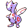

#176
Togetic
Fairy
Abilities: Super Luck, Serene Grace, Pixilate
Base stats BST 405
HP55
Attack40
Defense85
Speed40
Sp. Atk80
Sp. Def105
Evolution
dbbw EVOLVE_ITEM, SUN_STONE, TOGEKISSLevel-up learnset
LevelMoveType
Lv. 1Fairy WindFairy
Lv. 1CharmNormal
Lv. 1Disarming VoiceFairy
Lv. 1GrowlNormal
Lv. 1PoundNormal
Lv. 1ExtrasensoryPsychic
Lv. 5MetronomeNormal
Lv. 8Sweet KissFairy
Lv. 13EncoreNormal
Lv. 15Draining KissFairy
Lv. 21SafeguardNormal
Lv. 23AncientpowerRock
Lv. 25Soft-BoiledNormal
Lv. 27Baton PassNormal
Lv. 29MoonblastFairy
Lv. 31Nasty PlotDark
Lv. 33Double-EdgeNormal